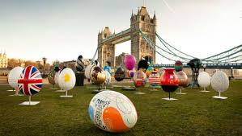
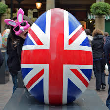

Páscoa em Londres
Com a proximidade da celebração de Páscoa - a mais importante data da igreja cristã, onde se comemora a ressureição de Jesus, muitos aproveitam o feriado para unir a família, esticar o fim de semana em uma viagem, ou mesmo divertir as crianças e amigos com a troca ou ainda a caça aos ovos.
Originalmente, o ovo representa fertilidade e renascimento e já antes de Cristo, era de costume a troca de ovos ocos pintados, para marcar o Equinócio da Primavera em 21 de Março. A data representa o fim do inverno e o inicio da Primavera, com o renascimento das flores e assim a ovo se tornou símbolo da celebração, sendo inserido mais tarde a Semana Santa e Páscoa.
Inglaterra
A comemoração da Páscoa na Inglaterra é bastante parecida com a do Brasil, marcando o inicio da celebração na Sexta-feira Santa (chamado de Good Friday), com o Domingo de Páscoa e a grande diferença é que se estende até Segunda-feira (chamada de Easter Monday).
Mas o que poucos sabem é sobre o Easter Egg Hunts, que são as caças aos ovos, que podem ser realizadas em casa com a família para crianças, como realizamos também no Brasil ou mesmo em grandes eventos oferecidos pelos bairro e prefeitura. Quando todos vão as ruas e parques em busca dos ovos escondidos, divertindo crianças e adultos.
Há diferentes locais para caça aos ovos, mas para quem deseja participar deste evento, pode conferir no centro de Londres o Easter at The Roof Gardens, com cerca de 1.5 acres de espaço verde as crianças poderão se divertir a partir das 11:00 da manhã.